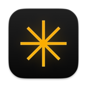
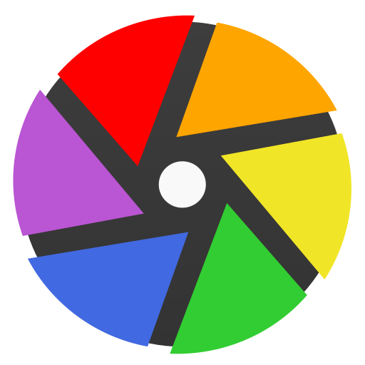
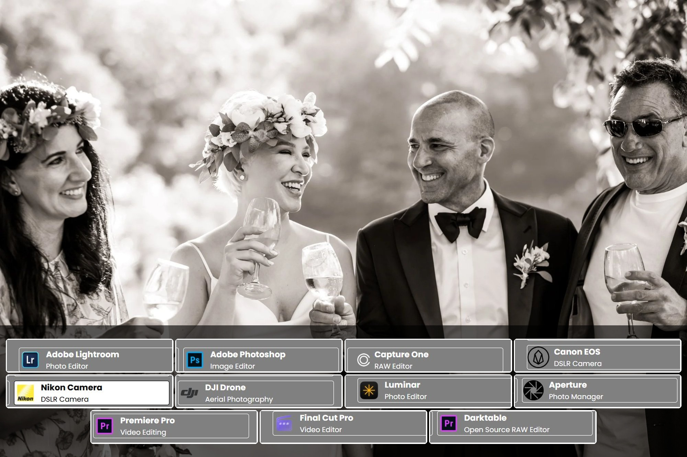
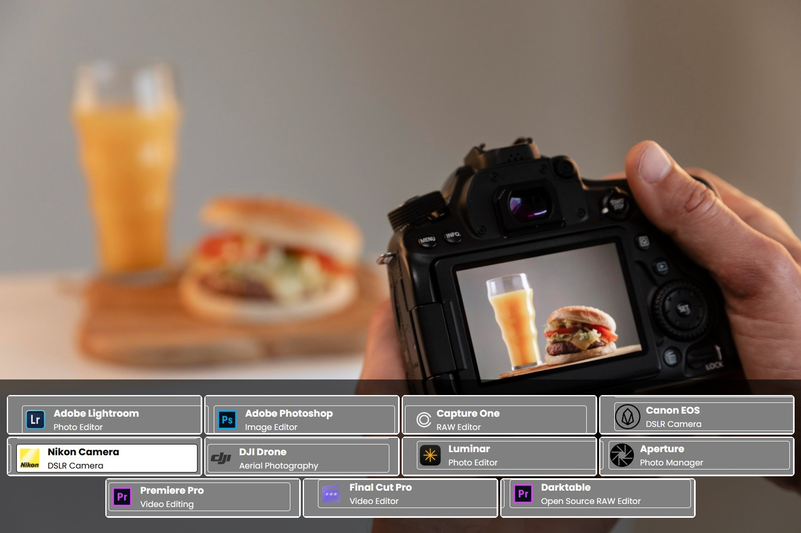
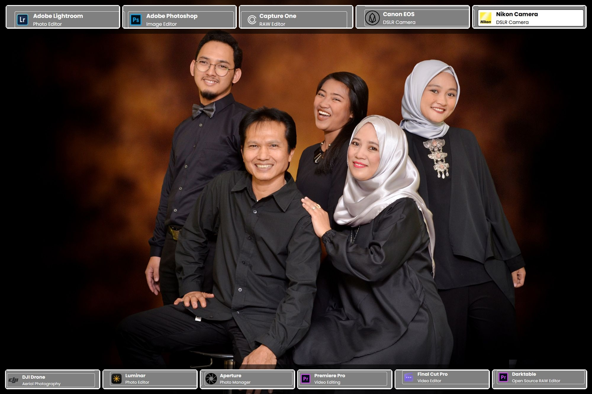
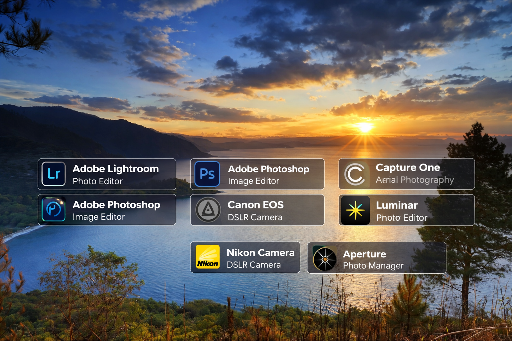

Hai, Nama saya Ahmed Alfarazi, seorang fotografer profesional dengan passion besar dalam menangkap momen indah melalui lensa kamera. Kecintaan saya pada fotografi dimulai sejak menemukan keajaiban menyimpan kenangan visual yang hidup dan emosional. Selama beberapa tahun terakhir, saya telah mengerjakan berbagai sesi foto, percaya bahwa kombinasi cahaya tepat, komposisi sempurna, dan editing halus menciptakan karya abadi.
Lihat Daftar ProyekBerikut ini beberapa tools yang biasa dipakai
Photo Editor

Image Editor
RAW Editor
DSLR Camera
DSLR Camera
Aerial Photography

Photo Editor
Photo Manager

Video Editing
Video Editor

Open Source RAW Editor
Berikut ini beberapa sesi fotografi yang saya kerjakan

Sesi foto pernikahan penuh emosi dan keindahan momen sakral.

Foto produk berkualitas tinggi untuk e-commerce dan katalog.

Sesi potret individu dan keluarga dengan pencahayaan natural.

Foto pemandangan alam dramatis dan petualangan outdoor.